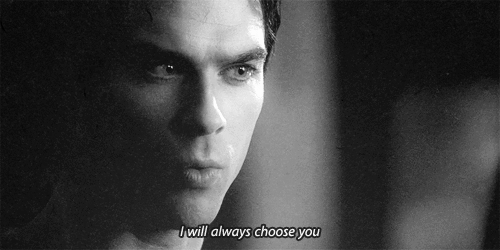

Eu não sou mais a mesma pessoa que eu era,
O tempo me moldou e me fez evoluir,
E agora eu busco novos caminhos e trilhas,
Sempre pronta para o que o futuro possa trazer.
Mas há uma coisa que permanece inalterada,
O meu amor por alguém cuja beleza é como a galáxia,
Um brilho intenso que ilumina todo o meu ser,
E me inspira a ser cada dia mais forte e valente.
Essa pessoa me encanta como as estrelas no céu,
E sua presença é como uma constelação a brilhar,
E eu me sinto abençoada por ter sua luz em minha vida,
Que me guia e me protege a cada passo do caminho.
Então eu sigo em frente, com coragem e determinação,
Sempre fiel ao meu próprio coração,
E sabendo que, mesmo quando a vida me surpreende,
O amor que sinto é como uma galáxia, eterno e intenso.

"Querida Princess,
Antes de tudo, gostaria de pedir desculpas por não ter contado algo importante antes. Eu sei que fui descuidado e deveria ter sido mais transparente desde o início. Sinto muito por qualquer desconforto ou insegurança que possa ter causado.
Mas o motivo pelo qual estou te escrevendo agora é para falar sobre algo que é muito importante para mim. Desde que começamos a nos conhecer, tenho sentido uma sintonia muito forte entre nós. E quero que saiba que estou totalmente disposto a criar uma relação com você, se essa for a sua vontade.
Entendo que é preciso respeitar o tempo e o espaço de cada um, e por isso quero deixar claro que não estou com pressa ou expectativas irrealistas. Quero que tudo aconteça no tempo que for melhor para você, sem pressão ou cobranças.
Apenas quero que saiba que meu interesse em você é genuíno, e que estou disposto a investir nessa relação com todo o meu coração.
Espero que possamos conversar sobre isso em breve, e que possamos construir algo bonito e significativo juntos.
Com carinho,
Lover"